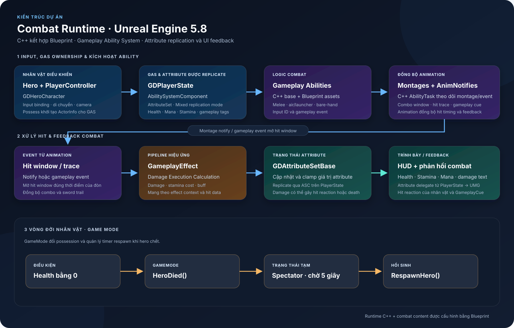

Technical Overview
Demo tập trung vào combat nhân vật bằng Unreal GAS. C++ cung cấp runtime foundation dùng chung như Ability System Component (ASC), attribute và damage handling, input binding, HUD updates và respawn flow. Blueprint chứa các ability và animation assets theo từng kiểu combat, giúp tinh chỉnh gameplay và presentation ngay trong Editor.
Project có asset cho ground melee/combo, air launcher, bare-hand attack và sword-trail feedback. Luồng combat kết hợp Gameplay Tags, Gameplay Effects, animation montage và event/notify để đồng bộ hành động, hit window và phản hồi UI.

GDHeroCharacter nhận input và liên kết avatar với ASC được giữ trên GDPlayerState.GDAttributeSetBase cập nhật và clamp các chỉ số như Health, Mana, Stamina.GDPlayerState lắng nghe attribute delegates và chuyển thay đổi tới HUD/status widgets. Attribute được replicate cùng ASC.HacknSlash_DemoGameMode chuyển controller sang spectator và respawn hero sau timer 5 giây.GDPlayerState, GDHeroCharacter, GDCharacterBase, Ability System/AttributeSet, montage-event ability task, damage execution, HUD binding và GameMode lifecycle.GDHUDWidget nhận health/stamina/mana; damage text và hit reactions được nối qua player/character systems.Project target Unreal Engine 5.8; module khai báo GameplayAbilities, GameplayTags, GameplayTasks, UMG, EnhancedInput và Niagara. Các .uasset/.umap được quản lý bằng Git LFS.
Local Editor PIE đã khởi chạy trên Map_Startup. Tài liệu này xác nhận cấu trúc từ source/assets; chưa dùng để khẳng định toàn bộ feature đã qua visual pass hoặc packaged build.